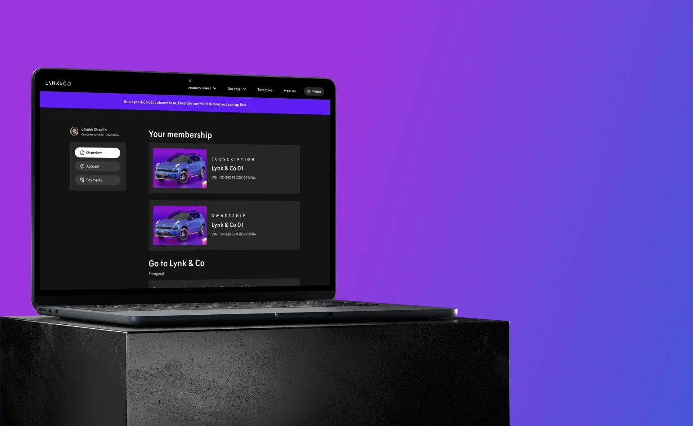

6+
years experience
3
industries: eCommerce, SaaS, automotive
WCAG
2.2
certified accessibility specialist
MSc
Product Management, Universitat de Barcelona 2026
Transformed a rolled-back self-service tool — generating +0.76 contacts/order — into a solution that achieved ~2% sustained deflection, surpassing the business target of 0.46%. Led end-to-end research, ideation, and design across a complex multi-stakeholder environment.
UX Research · UX Design · Usability Testing · Stakeholder Management · eCommerce
 Read case study
Read case study
Redesigned VistaPrint's contact channel surface to shift volume from low-VGP email to high-VGP callback — targeting a seven-figure annual revenue improvement. Evaluated 4 solution directions, ran usability testing with 10 participants, and specified an A/B/C test for in-production measurement.
UX Research · UX Design · Usability Testing · A/B Testing · eCommerce
 Read case study
Read case study
Redesigned Lynk & Co's post-purchase user profile into a modular self-service platform — reducing reliance on customer support for document updates, damage reporting, reservation management, and service requests. Delivered signed-off high-fidelity mock-ups and HTML & CSS prototypes ready for development.
UX Research · Information Architecture · Prototyping · Figma · HTML & CSS

Read case study
Senior Product Designer with 6+ years of experience in eCommerce and SaaS. I lead discovery, run usability research, read behavioural data, and design end-to-end — from problem framing to shipped product. Currently completing an MSc in Product Management. Accessible by default (WCAG 2.2).
 More about me
More about me